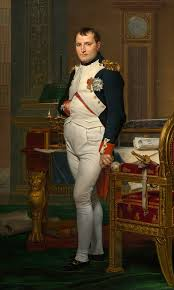
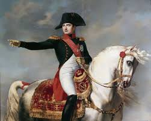

| Inicio | Logro | Galeria | Contacto |
Napoleon Bonaparte |
|||
|  | |||
Napoleon Bonaparte (1769–1821) was a French military and political leader who rose to prominence during the French Revolution and eventually became emperor. He is one of the most influential figures in modern history, known both for his strategic brilliance and for the deep reforms he introduced in France and much of Europe. His most important contribution to humanity was the creation of the Napoleonic Code, a clear and uniform legal system that replaced old feudal privileges and established equality before the law, protection of private property, and civil and religious freedom. This code became the foundation of the legal systems of many countries and continues to influence modern law around the world. Napoleon also reorganized the French public administration, making merit —not noble birth— the main requirement for holding government positions. This idea helped shape modern, efficient, centralized governments. In addition, he promoted major educational reforms by creating state-run secondary schools, technical institutions, and a national university system, which served as a model for many modern states by placing education under government responsibility. Economically, he stabilized France through the creation of the Bank of France and improved national infrastructure by building roads, bridges, and canals that facilitated trade and communication. In military matters, he completely transformed warfare by introducing new methods of organization and mobility that had a lasting influence on military doctrine around the world. Through his conquests, Napoleon spread the principles of the French Revolution across Europe, such as the abolition of feudalism, legal equality, and the secularization of the state. These ideas contributed to the rise of modern nation-states and to Europe’s political transformation. However, his legacy is complex: although he advanced significant reforms, he also waged wars that caused millions of deaths and ruled in an authoritarian manner. |
|||
|  | |||